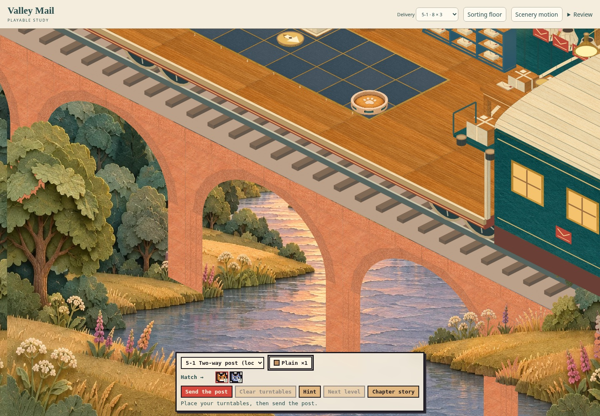
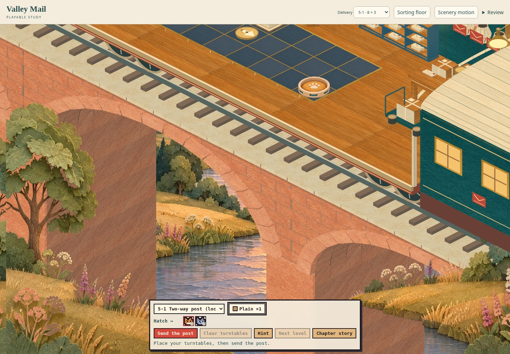
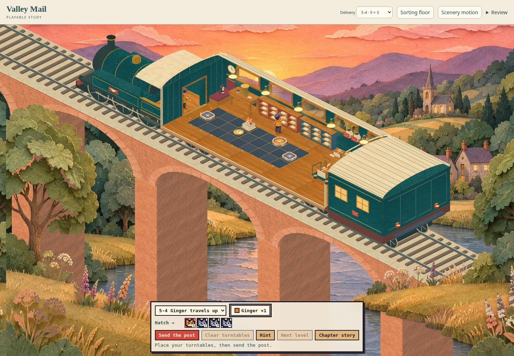
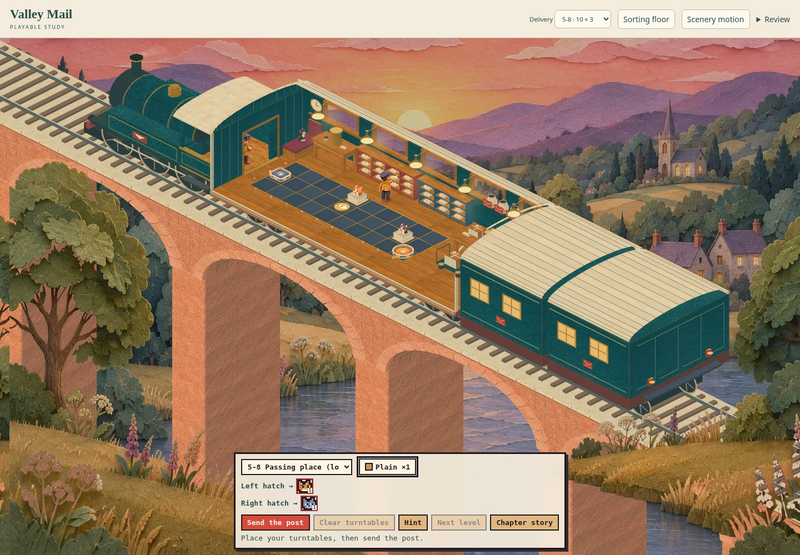

CATS BY POST · MAIL TRAINSolid paper arches
The viaduct now has recessed vaults, thick pier sides, raised arch stones and a layered cream ledge beneath the railway. Wider spans leave room to see the valley through the bridge. The river and tree artwork is unchanged.
Depth inside the openings

Before · flat arch faces
After · connected vault, pier reveals and layered stone ringFirst delivery in motion
Original travel speed, covering a complete section repeat. Foreground trees still pass in front of the bridge.
The largest board at dusk
Delivery 5-15 · 10 × 4. The train, board and chapter timings are preserved.
Intermediate carriage sizes

5-4 · 9 × 3
5-8 · 10 × 3Board pixels and pointer picks match the previous build across all four sizes. The prepared arch image is reused during movement and entry zooms. Clips contain sampled browser frames; physical-device performance remains a separate check.